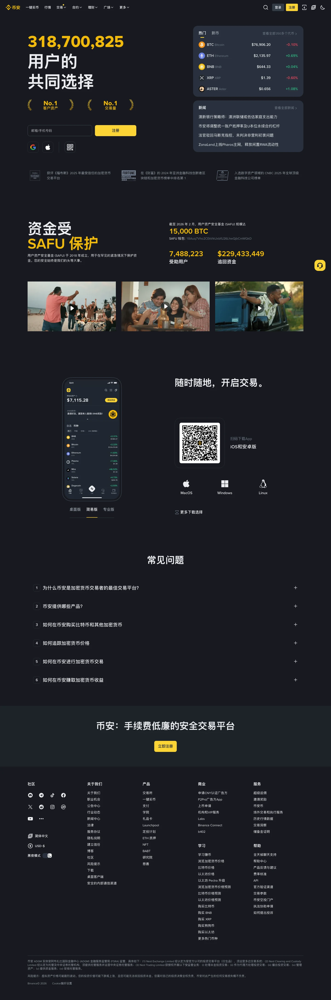

Binance 主题
Binance 的 Design.md 主题展示，围绕金融科技、媒体内容、强视觉、Web3组织页面。
Crypto exchange. Bold yellow accent on monochrome, trading-floor urgency.
金融科技媒体内容强视觉Web3数据仪表盘数据分析B2B 产品运营监控专业工具高密度信息

来源
- 来源
- getdesign.md
- 镜像
- github:VoltAgent/awesome-design-md
- 网站
- https://binance.com/
- 详情
- https://getdesign.md/binance/design-md
色板
#fcd535: #fcd535#f0b90b: #f0b90b#181a20: #181a20#3a3a1f: #3a3a1f#eaecef: #eaecef#707a8a: #707a8a#929aa5: #929aa5#2b3139: #2b3139#cdd1d6: #cdd1d6#ffffff: #ffffff#0b0e11: #0b0e11#1e2329: #1e2329
字体
display: BinanceNovabody: BinancePlexmono: ui-monospacehints: BinanceNova,BinancePlex,ui-monospace,IBM Plex Sans,Inter,Roboto
圆角
control: 8pxcard: 12pxpreview: 12pxpill: 9999pxsource: design-md
间距
xxs: 4pxxs: 8pxsm: 12pxmd: 16pxlg: 24pxxl: 32pxxxl: 48pxsection: 80pxsource: design-md
使用建议
建议
- 建议：Reserve {colors.primary} (Binance Yellow) for primary actions, brand-claim headlines, and the wordmark. Never use it for secondary or decorative purposes — yellow's scarcity is what makes it powerful。
- 建议：Keep {component.button-primary} (yellow with black text) as the universal primary CTA across both dark and light modes. The same button appears identically on {colors.canvas-dark} and {colors.canvas-light}。
- 建议：Use {component.button-trading-up} (green) and {component.button-trading-down} (red) only for explicit Buy/Sell or Long/Short actions. Never use them for general "confirm" or "cancel" because they carry semantic price-direction meaning。
- 建议：Use BinancePlex for every number. Prices, volumes, percentages, stat counters — all BinancePlex. Mixing BinanceNova into a number ticker breaks the trading-platform character。
- 建议：Choose canvas mode by surface intent: dark for marketing / product showcase / trading dashboards; light for transactional dialogs (buy / deposit / withdraw / form submission)。
避免
- 避免：introduce a second brand color. The system has exactly one accent ({colors.primary}) and any expansion dilutes the brand identity. The turquoise on Smart Money is a single-product experiment, not a system token。
- 避免：use yellow for body text or large surface fills. It is for focal-point CTAs and headlines only。
- 避免：use {colors.trading-up} / {colors.trading-down} as background fills on cards. They are price-direction signals, expressed as text color or small badge fill — never as a card surface。
- 避免：soften display weight. {typography.hero-display} and {typography.display-lg} are intentionally weight 700 — going to 400 reads as design-portfolio, not trading platform。
- 避免：add atmospheric gradients to the canvas (mesh, aurora, glow effects). Binance trusts color-block contrast — adding atmospheric depth muddies the trading-platform feel。
查看 DESIGN.md